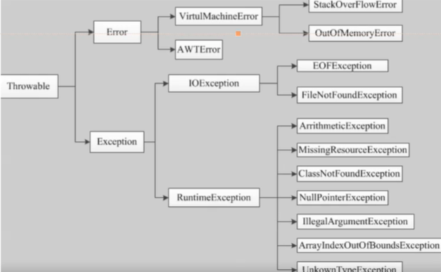

Java中的异常
本文最后更新于：8 天前
什么是异常
在软件运行的过程中，非常可能遇到异常的情况，英文为exception
比如：文件找不到，网络连接失败，非法参数
当然与之对应的成为error，是一种错误，要与异常区分开来，一般不是程序员造成的。
异常的体系结构
java把异常作为一个对象来处理，并定义了一个基类java.lang.Throwable作为所有异常的超类。
在java中的api已经定义了许多异常类，这些异常分为两大类，就是上面我提及到的Error错误与Exception异常

Error
从上图可以看到Error中，有一分支是虚拟机运行错误，就比如我们常见的栈溢出StackOverFlowError（互相调用）或者内存溢出OutOfMemoryError（内存泄漏），这些错误发生时，java虚拟机会直接停止线程，也就是程序停止运行。
Exception
当然在exception中有一个特别热重要的子类就是RuntimeException（运行时异常），包含数组下标越界（），空指针异常（NullPointerException），算术异常（ArithmeticException），寻找不到类（ClassNotFoundException），这些异常不是编译型异常，所以可以不用进行处理。
异常处理机制
try/catch
通俗的来说，try就相当于一个监控的区域，在监管当前的代码块里会出现的异常。catch相当于匹配类型，因为异常会有很多类型（类），同时我们无法预知会发生什么样的异常，所以可能会很多块catch。最后finally相当于兜底，用于资源的关闭，防止出现异常之后，对资源进行浪费。
/**
* @Classname Test
* @Description TODO
* @Date 2020/12/1 21:09
* @Created by mmz
*/
public class Test {
public static void main(String[] args) {
int a = 1;
int b = 0;
try {
System.out.println(a/b);
}catch (ArithmeticException e){
System.out.println("被除数不能为零");
}finally {
System.out.println("最终会被执行");
}
}
}当然catch里面的类型，只要是Throwable的子类即可。无论异常，或者错误，都可。
/**
* @Classname TestTypeOfCatch
* @Description TODO
* @Date 2020/12/1 21:15
* @Created by mmz
*/
public class TestTypeOfCatch {
public static void main(String[] args) {
int a = 0;
int b = 0;
try {
System.out.println(a/b);
}catch (Throwable t){
System.out.println("异常发生了");
}finally {
System.out.println("最终执行");
}
}
}还有想说的，就是最大的要捕获的类型要写在最下面，因为是一个层层递进的过程。如果第一个捕获到了，那么下面的catch就不会被执行了。那么现在这个版本会直接报错，说明你的顺序写的不正确。
当然并列的就没有什么问题
/**
* @Classname TestCatchOrder
* @Description TODO
* @Date 2020/12/1 21:18
* @Created by mmz
*/
public class TestCatchOrder {
public static void main(String[] args) {
int a = 0;
int b = 0;
try {
System.out.println(a/b);
}catch (ArithmeticException e){
System.out.println("捕获Throwable类型");
}catch (NullPointerException e){
System.out.println("捕获了Exception类型");
}
}
}throw
当然，我们也可以用throw来进行异常的捕获，通常我们在方法中throw异常
/**
* @Classname TestOfThrow
* @Description TODO
* @Date 2020/12/1 21:23
* @Created by mmz
*/
public class TestOfThrow {
public static void main(String[] args) {
new TestOfThrow().testThrow();
}
public void testThrow(){
int a = 0;
int b = 0;
if(b == 0 ){
throw new ArithmeticException("除数不能为0");
}
System.out.println(a/b);
}
}throws
在方法里面抛出异常是throw，在方法上是throws
import com.sun.org.apache.bcel.internal.generic.NEW;
/**
* @Classname TestOfThrow
* @Description TODO
* @Date 2020/12/1 21:23
* @Created by mmz
*/
public class TestOfThrow {
public static void main(String[] args) {
try {
new TestOfThrow().testThrow();
}catch (ArithmeticException e){
System.out.println(e);
}
}
public void testThrow() throws ArithmeticException{
int a = 0;
int b = 0;
System.out.println(a/b);
}
}自定义异常
使用java内置的异常类可以描述在编程时，出现的大部分异常情况，除此之外，用户还可以自定义异常，需要用户自定义类继承Exception类即可。
步骤如下：
1）创建自定义异常
2）在方法中throw关键字抛出异常
3）如果在当前抛出异常的方法中要处理异常，可以用try-catch语句进行处理，否则在方法的声明处通过throws关键字指明要抛出的方法调用者的异常，继续进行下一步
4）在出现异常方法的调用者中捕获异常
自定义类
/**
* @Classname MmzException
* @Description TODO
* @Date 2020/12/1 21:31
* @Created by mmz
*/
public class MmzException extends Exception {
//传递数字，如果数字大于10抛出异常
private int number;
public MmzException(int number) {
this.number = number;
}
@Override
public String toString() {
return "MmzException{" +
"number=" + number +
'}';
}
}测试类
/**
* @Classname MmzTest
* @Description TODO
* @Date 2020/12/1 21:35
* @Created by mmz
*/
public class MmzTest {
static void test(int a) throws MmzException {
if(a > 10) {
throw new MmzException(a);
}
System.out.println("ok");
}
public static void main(String[] args) {
try {
test(11);
} catch (MmzException e) {
e.printStackTrace();
}
}
}异常小结
处理运行时异常，采用逻辑去合理规避同时辅助try-catch处理
在多重catch块后面，可以加一个catch（Exception e）来处理可能会被遗漏的异常
对于不确定的代码，也可以加上try-catch，处理潜在的异常
尽量去处理异常，切忌简单的调用e.printStackTrace（）去打印异常
尽量添加finally语句去释放占用的资源
本博客所有文章除特别声明外，均采用 CC BY-SA 4.0 协议 ，转载请注明出处！